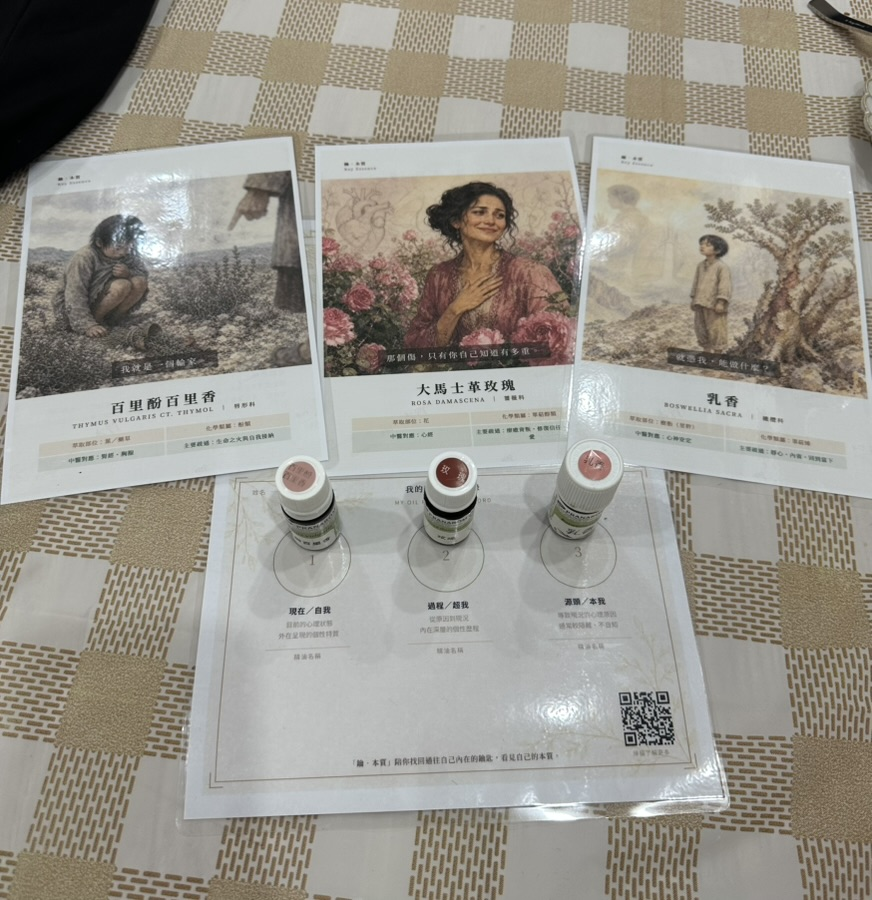
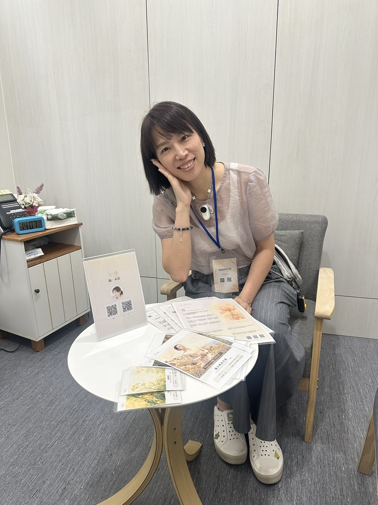

不是算命，是直覺洩底。你抽到的味道，會告訴你此刻沒說出口的事。

歡迎留下你的資訊，我們會依現場順序安排體驗（每場約 15-20 分鐘）。若當日候位人數較多，也會透過此表單通知後續梯次或延伸服務資訊。
填寫下方表單，留下你的資訊，我們會依現場順序為你安排時段。
精油側寫不是配方，也不是算命——是透過三支盲抽的精油，看見你此刻的情緒位置、走過的歷程，以及還沒說出口的深層根源。市集現場由 Molly 親自一對一解析，帶你在忙碌的市集裡，留一段安靜看見自己的時間。
